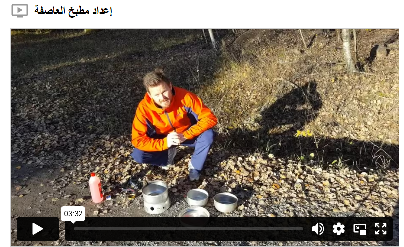

الطبخ في الهواء الطلق
إذا كنت تطهو الطعام باستخدام موقد الرحلات (stormkök)، فمن المهم أن يكون الموقد موضوعًا على سطح مستوٍ وألا يكون على أو بالقرب من شيء يمكن أن يشتعل. عندما تريد تعبئة الوقود في الموقد، من الضروري جدًا التأكد من أنه لا يزال مشتعلاً. يمكنك التأكد من ذلك بوضع يدك على بعد حوالي خمسة سنتيمتر فوق الموقد، لأن اللهب غالبًا ما يكون غير مرئي. قم بتعبئة الموقد بحذر لتجنب انسكاب الوقود.
